IOS-SETUP-001 Privacy gate and onboarding
Continue remained disabled before consent. Accepting consent entered onboarding, and completing the flow revealed the native home.
20 scenarios passed · 1 blocked
IOS-SETUP-001 Privacy gate and onboardingContinue remained disabled before consent. Accepting consent entered onboarding, and completing the flow revealed the native home.
IOS-HOME-001 Quick-site visibility and persistenceOpenAI was inserted into the visible six-site window and remained first after terminating and relaunching the app.
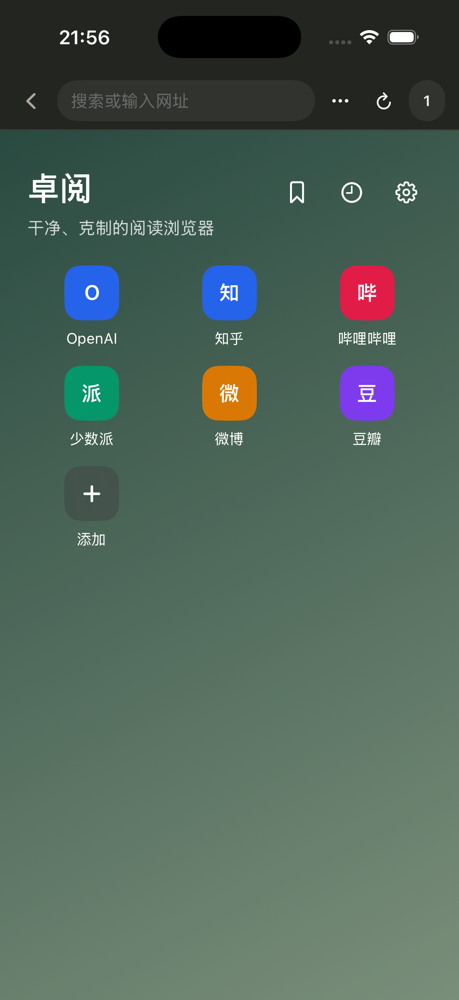
IOS-SETTINGS-001 Appearance and start-page settingsAppearance, quick-site visibility/count, background, and quick-site management controls were reachable. Dark appearance persisted across relaunch.
IOS-ROTATION-001 Landscape layoutBrowser chrome and the visible quick-site grid remained accessible without clipping or overlap.
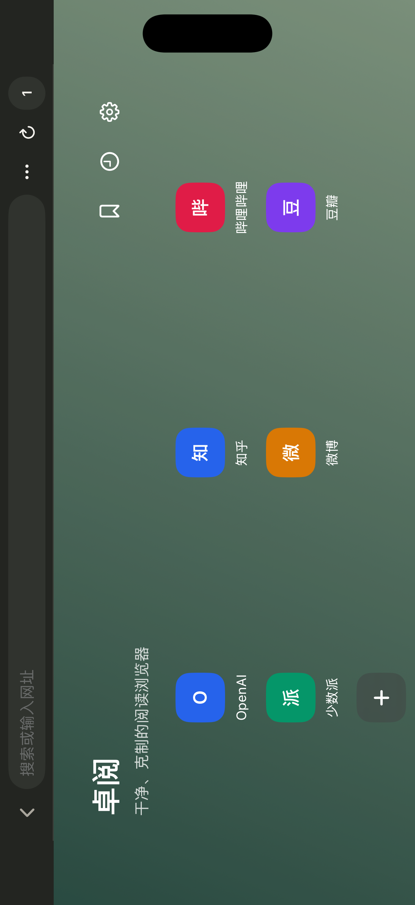
IOS-NAV-001 Back, forward, and navigation historyReturning from IANA to Example Domain enabled Forward. The history sheet exposed the real WKWebView entries and navigated to the selected entry.
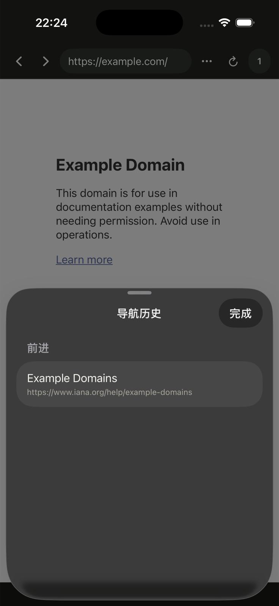
IOS-TABS-001 Pinned tab persistenceThe explicit pin action updated the card, adjacent close selection returned to that tab, and the pin remained after terminating and relaunching the app.
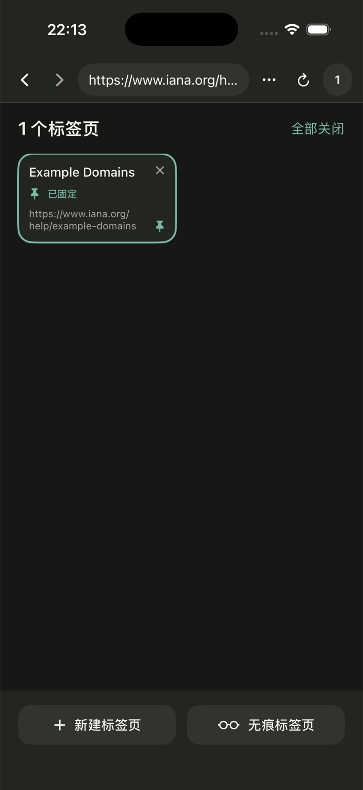
IOS-TAB-LIMIT-001 Soft tab limitThe eight-tab threshold did not block creation. It offered Continue and Cleanup; Cleanup reduced nine tabs to seven while preserving the active tab.
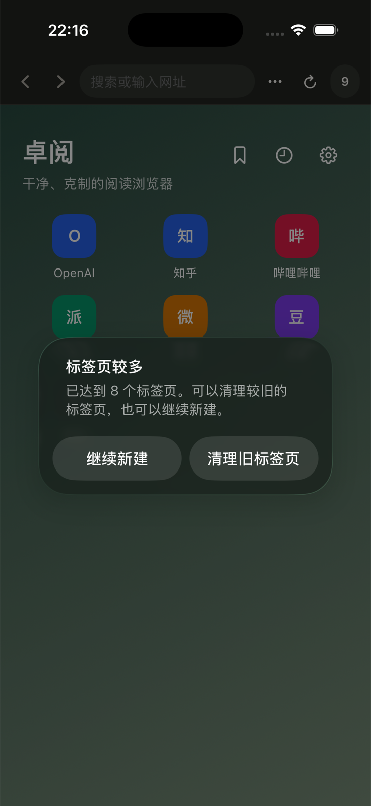
IOS-TAB-REORDER-001 Group-safe tab reorderingThe accessibility reorder action moved the Example Domain card while preserving the active page. The new order survived termination and relaunch; unit tests cover pinned, normal, and private group boundaries.
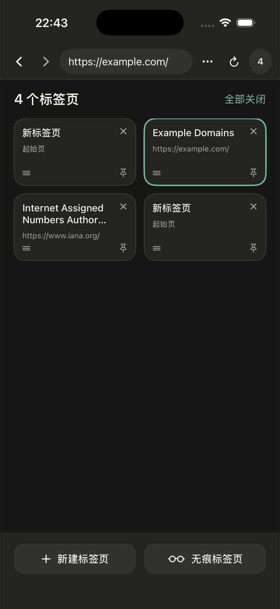
IOS-KEYBOARD-001 Keyboard commands and recent-closed recoveryCommand-T created a tab, Command-Shift-T restored a tab closed from the overview, and Command-F opened find-in-page. The macOS Simulator host reserves Command-L, Command-W, and Control-Tab, so those bindings are implemented and compiled but are not counted as Simulator interaction acceptance.
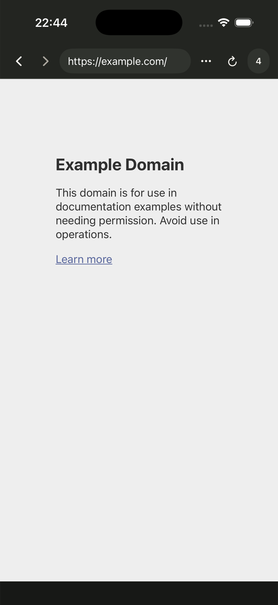
IOS-PAGE-STATE-001 Page-state continuityThe local fixture persisted the normal note but not the password. The session payload contained only the note field and a real scroll offset of 2548. Cold launch exposed Continue / Start Over; Continue returned to Section 5, while Start Over cleared the stored offset.
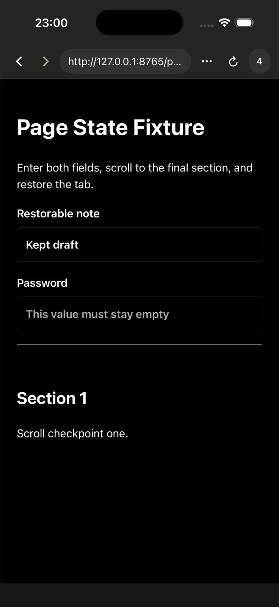
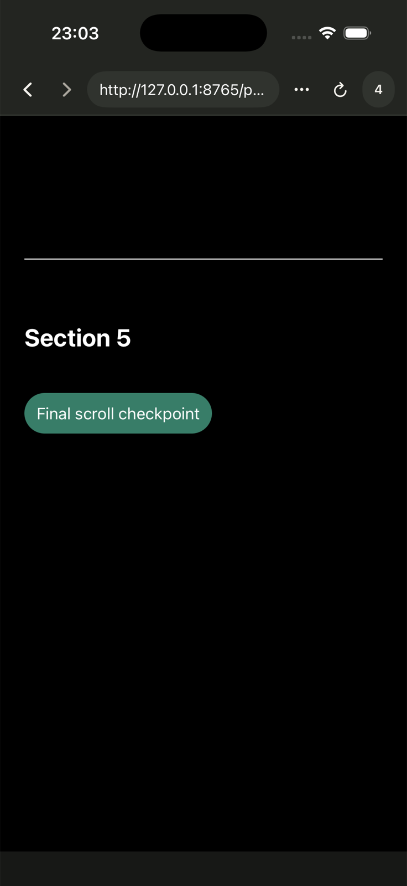
IOS-LIBRARY-001 Read-later and Library managementThe page menu created one unified saved item with a visible read-later marker. Native editing persisted the renamed title, and opening that page changed its stored isRead value to true. Settings persisted the 24-hour history-retention choice; HTML import/export actions were visible and the system exporter opened with the default browser-bookmarks filename.
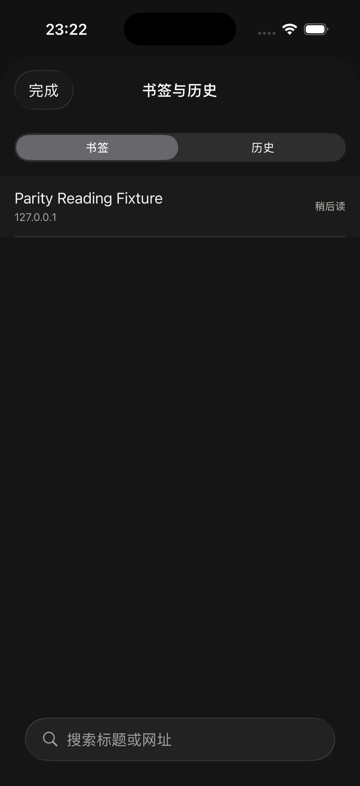
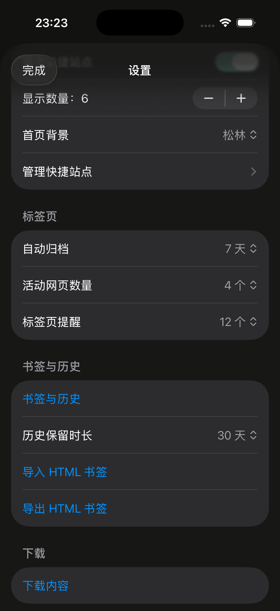
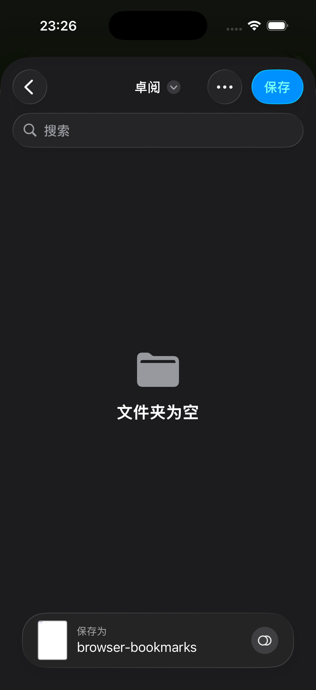
IOS-DOWNLOAD-001 Durable download managementA 100 MB streamed fixture exposed live byte progress and moved through downloading, paused, resumed, cold-launch interrupted, retrying, and canceled states. A completed fixture opened in Quick Look; after its file was removed outside the app, cold launch changed the record to a missing-file failure instead of offering Open. Settings exposed and persisted concurrency, large-file threshold, Wi-Fi-only, and completion-notice controls.
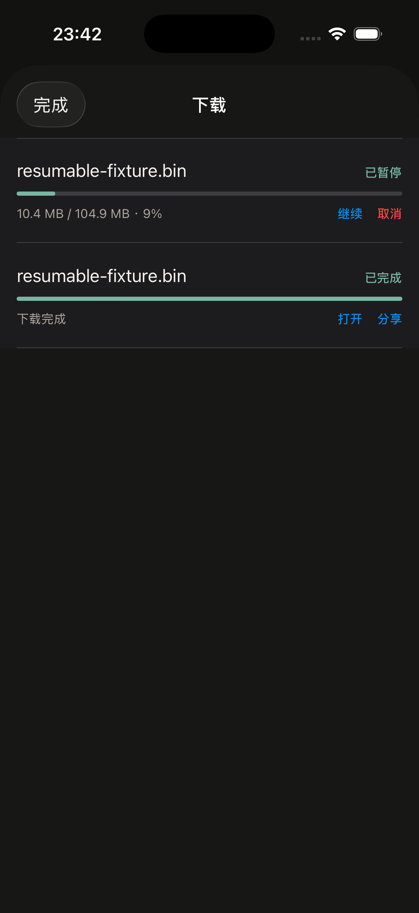
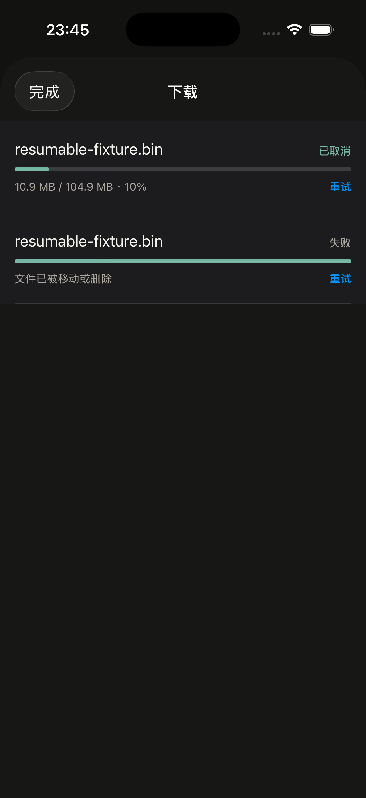
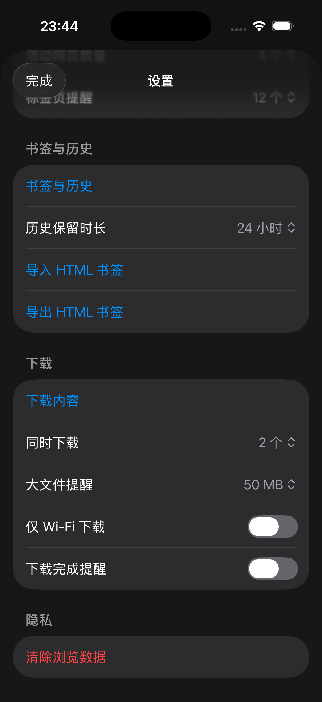
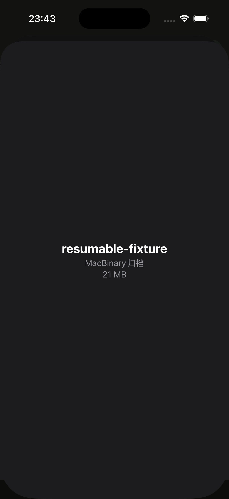
IOS-ARTICLE-001 Offline article lifecycleThe shared capture script saved the fixture body and image, a body-only keyword returned the article, and tags, topic, and note metadata persisted. After the fixture server stopped and the app cold-launched, the local reader reopened near the final checkpoint with its image available. Markdown export opened the system share sheet. Highlight storage and relocation are policy-tested; text-selection interaction remains a physical-device acceptance item.
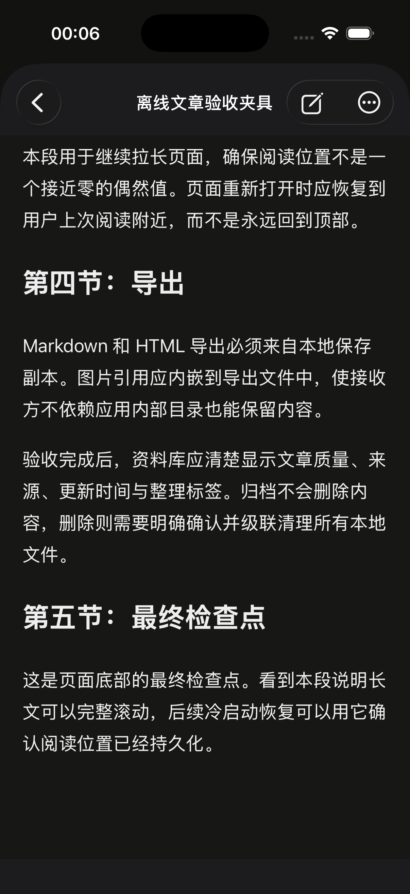
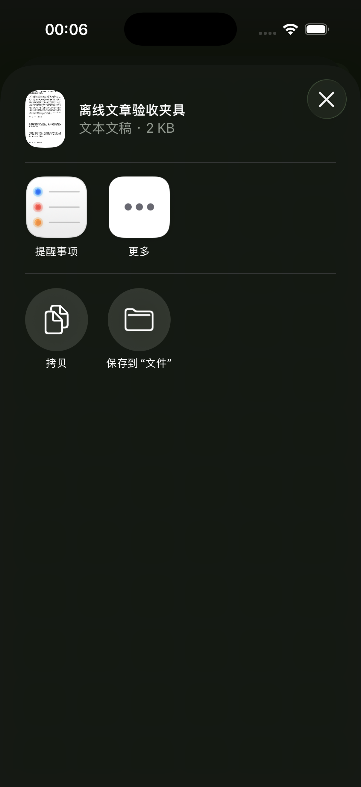
IOS-PRO-001 Server-authoritative Pro gateSave Offline Article opened the Pro paywall without writing a new capture. The paywall exposed benefits, agreement, restore, subscription management, legal, privacy, and support controls. No App Store products were available to this Simulator account, so no price was invented and Purchase remained disabled even after agreement; the production gateway catalog was verified separately. Settings exposed both Pro and support entries. Simulator interaction does not cover a real Sandbox purchase, renewal, refund, or restore.
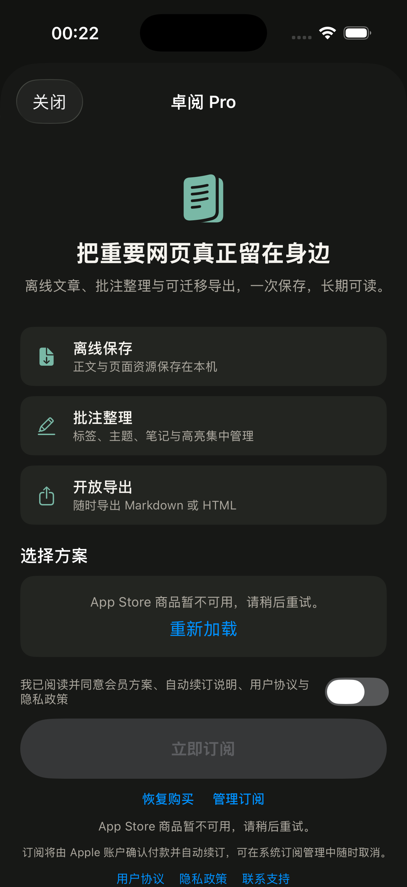
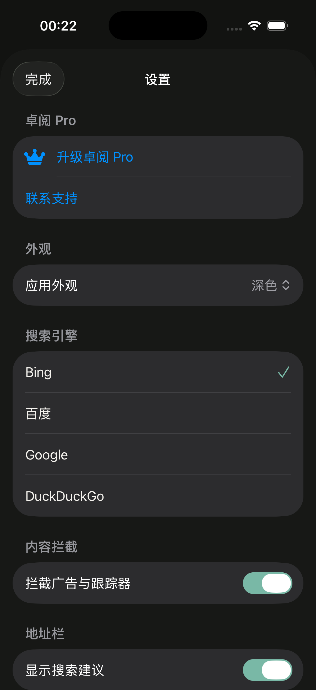
IOS-PRIVACY-001 Site privacy and connection securityThe local HTTP fixture showed an insecure connection state, and focusing its password field produced a native warning before any text was entered. The same panel reported example.com as an encrypted HTTPS connection and explicitly described WKWebView's certificate-detail boundary. Settings exposed the persisted cookie-on-close switch and a selective clearing sheet for history, Cookie/storage, cache, and permissions, with a separate history range. Destructive Clear actions were inspected but not invoked against retained Simulator data.
IOS-WEB-DISPLAY-001 Web appearance, user-agent policy, and site zoomThe page menu exposed one-shot Mobile/Desktop actions plus per-site and global user-agent policy. Example Domain immediately applied 125% zoom and retained both Desktop and 125% after a cold launch. Global Settings exposed system/light/dark webpage appearance and 12/14/16/18 pt minimum-font choices; the selected 18 pt value was visible before relaunch. Focused tests cover legacy defaults, normalization, resolution, and round-trip persistence.
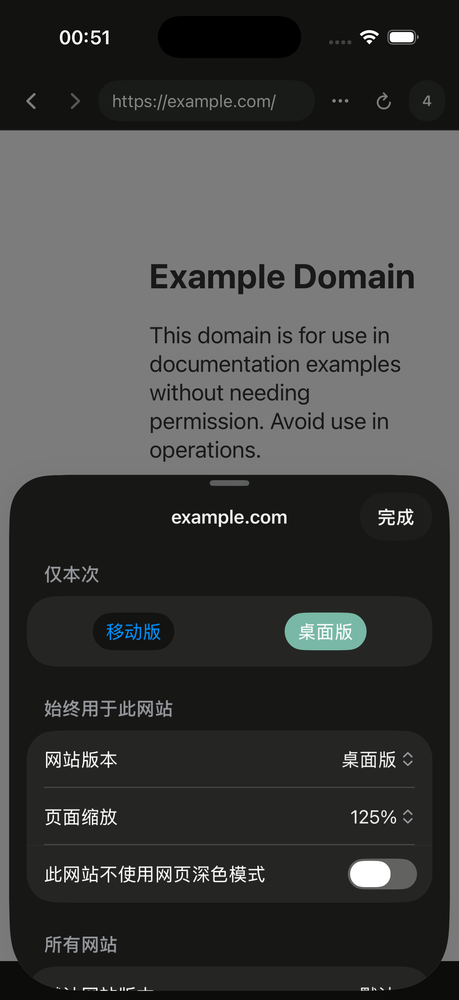
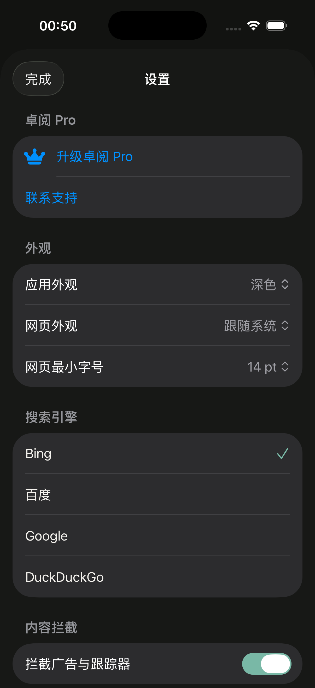
IOS-SITE-CONTROL-001 Six-rule site controlsExample Domain exposed all six Harmony-matched per-site policies: network rules, tracker cleanup, element cleanup, automatic reader mode, dark web pages, and desktop website. The retained record stayed inherited; focused executable tests cover persistence, precedence, and legacy decoding.
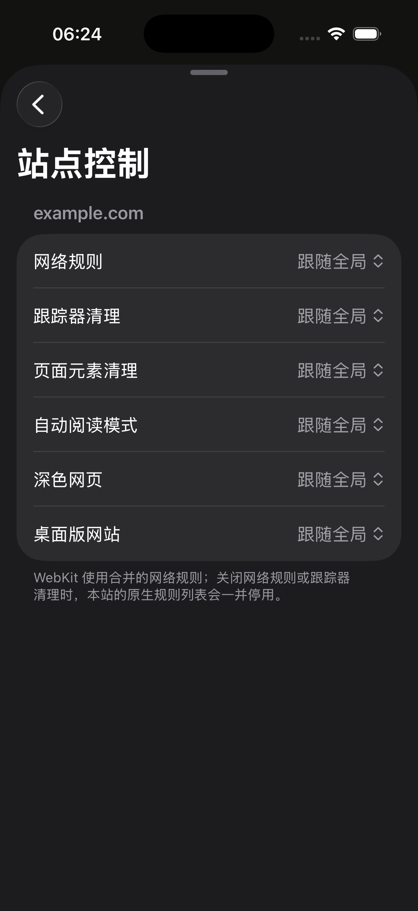
IOS-ABOUT-001 Persistent About surfaceSettings showed the current 1.0.0 (1) version and opened a persistent About surface containing the product message, user agreement, privacy policy, support entry, and filing number.
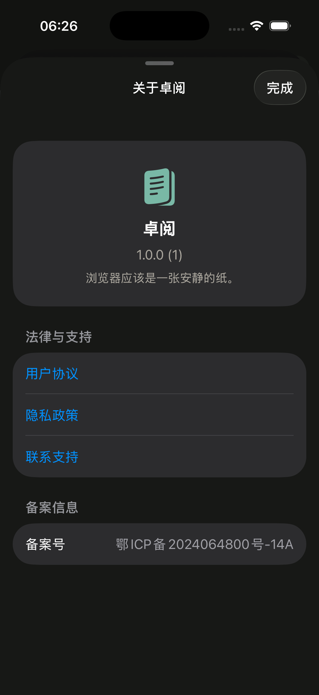
IOS-SITE-PERMISSIONS-001 Per-kind site permission editingThe scenario is blocked because the retained Simulator container has no saved site permission records. Camera, microphone, and location access was not requested merely to manufacture QA state. Independent mutation and preservation behavior remains covered by focused executable tests.
IOS-OMNIBOX-001 Omnibox editing shortcutsFocusing the retained IANA URL selected the complete value, hid unrelated browser chrome, and exposed native Clear, explicit Cancel, current-host, .com, .cn, www., and path controls. .com changed openai to openai.com without navigation; first-result completion wrote the full Bing URL, and Cancel restored the active IANA address after temporary input.
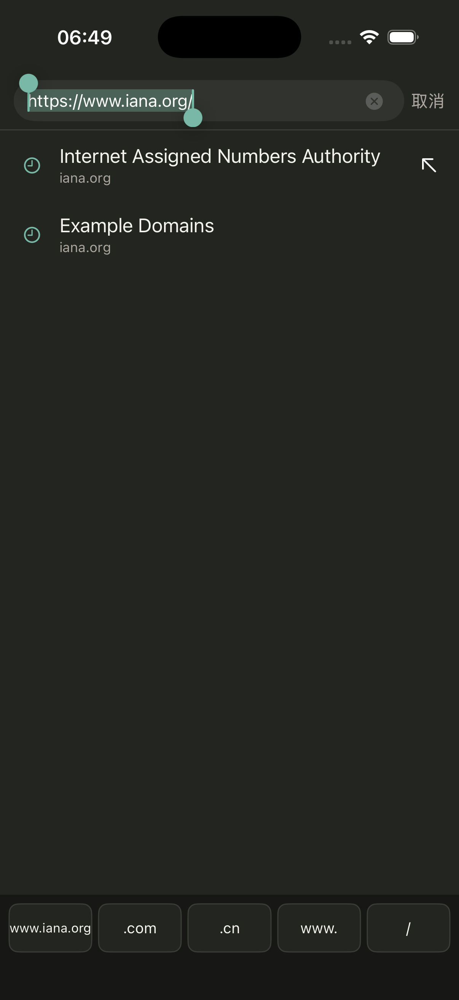
IOS-SHARE-EXTENSION-001 Safari Share Extension round tripSimulator Safari automatically listed ZhuoBrowser in its share sheet. The extension read Example Domain, displayed all five inbound actions, queued Clean Open through the shared App Group, reported success, and returned to Safari. Foregrounding ZhuoBrowser created a fifth tab at the cleaned https://example.com/ URL, and the consumed shared-container queue returned to zero pending files.
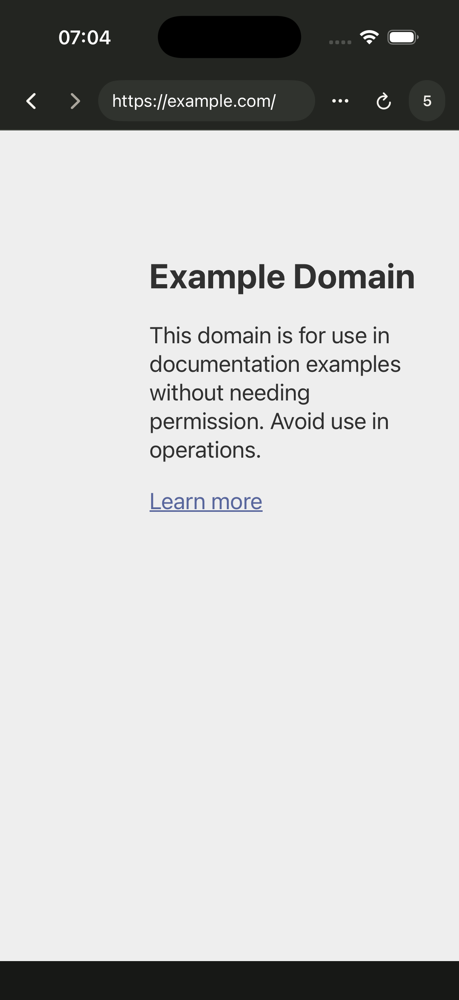